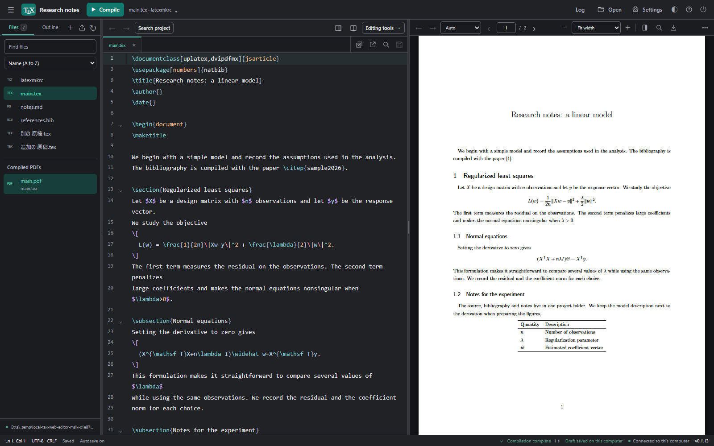
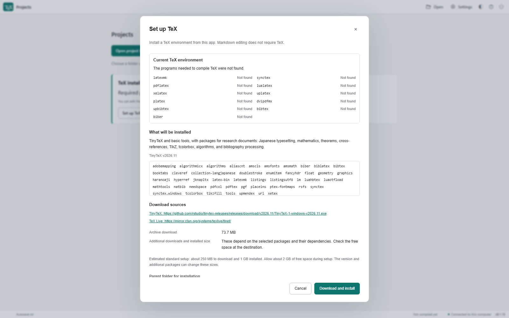
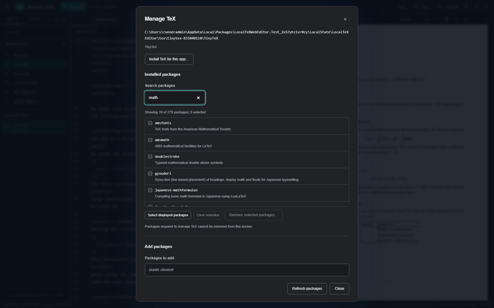
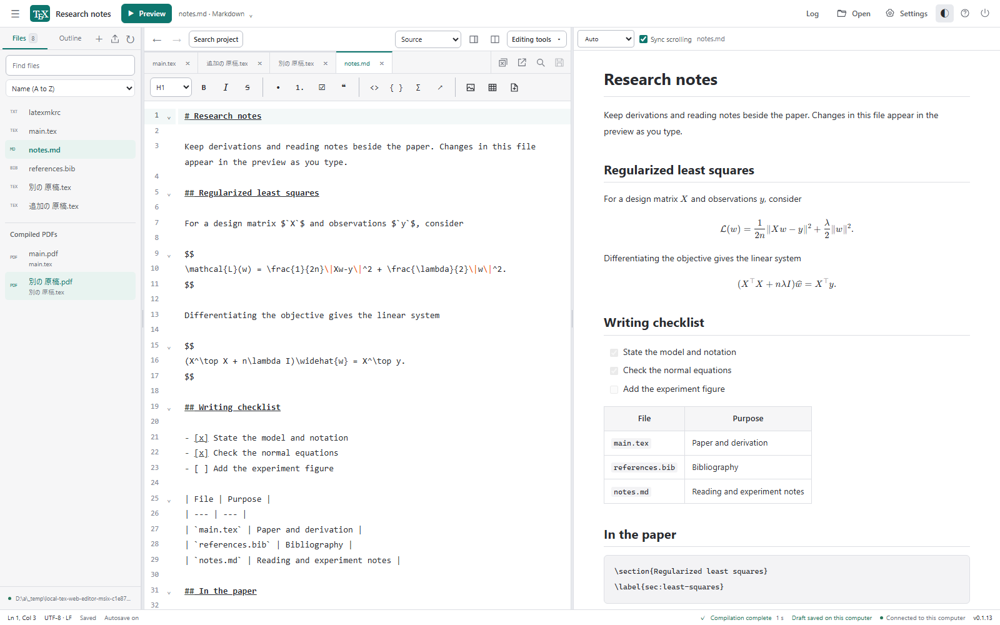

Local TeX Web Editor
Write TeX and edit Markdown directly in your browser. Compile with TeX Live on your computer and read the PDF alongside your manuscript.
Launching the app opens a localhost page. Documents stay in the project folder on your computer.

New in v0.1.13
Set up TeX with clear steps and reset the information the app remembers.
- Find setup and management together. Home and Settings show both actions. Explanations and buttons have more space, and package additions proceed through the app’s review screen.
- Follow the setup guide with screenshots. See the actual screens for the package selection, destination, progress and completion, then compile your first document.
- Reset saved information from Settings. Review file counts and sizes, then choose settings, drafts, history, templates or preview caches. Project documents and installed TeX remain available.
See the v0.1.13 release notes for the complete changes.
Requirements and app size
Use a current version of Chrome or Edge. For TeX compilation, use Set up TeX… in the app or select an existing TeX Live installation. If your project already compiles in another editor, choose that same TeX folder. Markdown editing and preview work without TeX.
| Platform | Operating system | Example TeX folder |
|---|---|---|
| Windows | Windows 10 / 11, x64 | C:\texlive\2025\bin\windows |
| macOS | macOS 12 or later, Apple Silicon or Intel | /Library/TeX/texbin |
The Microsoft Store edition requires Windows 10 version 2004 (build 19041) or later, or Windows 11, on an x64 PC.
The app uses latexmk to compile and synctex to move between source and PDF. If your project uses a latexmkrc or .latexmkrc file, keep it with the source files.
| v0.1.13 | ZIP download | App after extraction |
|---|---|---|
| Windows x64 | About 9 MB | About 18 MB |
| macOS, both CPUs | About 17 MB | About 36 MB |
Sizes are rounded to the nearest MB; see the v0.1.13 release assets for each download's size. 1 MB = 1,000,000 bytes. TeX Live, documents, drafts, edit history, templates and compilation files use additional space. The app includes its editor and PDF viewer; it runs without installing Python, Node.js, Go or VS Code.
Install TeX yourself with a smaller package selection
On Windows, the TeX Live installer lets you choose a smaller installation scheme. On Mac, BasicTeX provides a small starting point. Add latexmk, synctex and packages needed by your documents.
Select that installation in Settings, then use Manage TeX… to add packages. The app shows the package names and destination before you choose Add these packages. For a shared installation managed through the official TeX tool, open that tool from the app. See Use an existing TeX installation in the README.
Get started
-
Install or download the app, then open it
Windows (Microsoft Store): install the app from Microsoft Store, then open Local TeX Web Editor from the Start menu.
Windows (ZIP): extract the ZIP and double-click
local-tex-web-editor.exe.Mac: extract the ZIP, move
Local TeX Web Editor.appto Applications, then open it from Finder or Spotlight.The editor opens in your default browser. Home and Settings offer Set up TeX… for a new installation and Manage TeX… for the selected installation. Follow the illustrated setup guide below to prepare TeX.
The interface starts in English. Open Settings → Language / 言語設定 and select 日本語 to see it change immediately. Choose 設定を保存して反映 (Save and apply settings) to use Japanese next time, or キャンセル (Cancel) to return to the saved language.
-
Open your project folder
Choose Open project folder on Home, then use Browse… or enter the path to the folder containing your
.texand.bibfiles, images and project settings. Click Open. To use an Overleaf project, download its source ZIP and extract it first.For a new project, choose Create from a template on Home, select a template, and choose a parent folder and a new folder name. Click Create and open. The first-document steps below show each field.
For a new TeX installation, open Set up TeX… from Home or Settings and review the download before starting. Successful setup selects the installed environment. To use an existing installation, select its program folder in Settings and choose Save and apply settings.
-
Open a TeX document and compile
For an existing project, set Settings → Compiler before compiling: choose Use latexmkrc settings when the project includes
latexmkrcor.latexmkrc, or choose the required TeX engine. Click Save and apply settings.Select the document in the file list and click Compile, or press Ctrl + Enter on Windows or Cmd + Enter on Mac. The resulting PDF appears on the right.
If Windows or macOS blocks an app downloaded as a ZIP
For the Windows ZIP edition and SmartScreen, see the Windows launch instructions and Microsoft's guidance.
On Mac, see the macOS launch instructions and Apple's guide to opening an app.
The Microsoft Store installation adds the app to the Windows Start menu. In the Windows ZIP edition, the app's Settings can create Start menu or desktop shortcuts. On Mac, open the app from Applications or Spotlight.
Manage projects from Home
Click the TeX logo to open Home. Cards show the current and recent projects with their full folder paths. Return to editing resumes the same workspace, including unsaved text, open tabs, and cursor positions.
Opening Home or returning to the browser window checks the folders again. Missing or unreadable locations show an explanation and Check again. Choose a moved project's new folder from the project picker. On a card for another project, Remove from recent removes the entry while its files, settings, and drafts stay on your computer. If the current folder is unavailable, you can continue editing and recording drafts; saving and compilation resume when it is available again. Saved PDF previews remain readable.
Choose Delete… on a project card to review its files, folders, hidden items, and saved drafts. Check the acknowledgment and enter the exact folder name, then choose Delete project to delete the folder and its contents from your computer.
If files or drafts change after the review, the app asks you to review the updated list. Deletion also removes the project's recent entry, saved drafts, editing session, and saved PDF previews.
Return to the editor and finish a session
The local app keeps running when its browser tab sleeps, is discarded, or closes. Returning to the tab reconnects to the same local address. Launching the same version again opens the existing editor.
To finish, choose Quit in the app and follow the save prompt. This stops the local app and its background work.
Set up and manage TeX
Use the TeX installation already on your computer, or let the app install one. Home and Settings show both Set up TeX… and Manage TeX…, so you can choose installation or maintenance directly. Markdown editing works while you prepare TeX.
Use an existing TeX installation
Open Settings and check TeX Live bin folder. An empty field lets the app search automatically. If TeX already works in another editor, enter the same program folder here: for example, C:\texlive\2025\bin\windows on Windows or /Library/TeX/texbin on Mac. Use the folder containing programs such as latexmk.
Choose Save and apply settings, then open Settings again to check the displayed latexmk and SyncTeX paths. Manage TeX… opens the selected environment and its installed packages. You can now open a project and compile. If a required tool is missing, use Add SyncTeX… or Add TeX packages in Settings to continue with the app's available operations.
Install TeX from the app: from Home to the first PDF
The following screens show the English interface. You can select Japanese in Settings → Language / 言語設定. Each image opens at full size.
-
Open Set up TeX… on Home
Click the TeX logo to open Home, then choose Set up TeX… under TeX installation and management. The same button is available in Settings. Manage TeX… becomes available when a TeX environment is selected.

Start a new installation with Set up TeX…. Use Manage TeX… for the selected environment.Click to view at full size. -
Review the programs and packages
Current TeX environment shows the tools found on your computer. Under What will be installed, review TinyTeX and the package list. The standard selection includes
latexmk, SyncTeX, Japanese typesetting, mathematics, figures, theorems and bibliography tools.This screen is the review step. The download starts when you choose Download and install after checking the destination in the next step.

Read the available programs and the packages included in the new installation.Click to view at full size. -
Check the download and choose the destination
Scroll down inside the setup dialog to Download sources and Parent folder for installation. The app uses the official TinyTeX v2026.11 archive and TeX Live packages. Use the proposed parent folder, or choose Browse… to select another location. The app creates its TeX folder inside that parent folder with your normal user permissions.
Allow about 250 MB of downloads on Windows or 300 MB on Mac, about 1 GB installed, and about 2 GB of free space during setup. The version and additional packages can change these estimates. Check the displayed location, then choose Download and install.

Scroll within the dialog to review the download and destination before starting.Click to view at full size. -
Follow the progress or continue editing
The app shows the download amount, then the current stage as it extracts files, adds packages and checks the available programs. Expand Setup log to read the details.
Close and continue editing lets you edit and save Markdown while setup runs. Return through View setup progress on Home or in Settings, or the status indicator at the bottom of the editor. To interrupt the installation, choose Stop setup. After a stopped or failed attempt, Review and try again… reopens the setup review.

The stage and log show what the app is doing while setup continues.Click to view at full size. -
Check that TeX setup is complete
Wait for TeX setup is complete. The app selects the installed environment and checks its programs, so you can compile immediately. The destination and setup log remain available on this screen.
When you started from Home without a project, click Create a sample… to open Start from a template. To use an existing project, click Close.

The completed setup is selected for compilation in this app.Click to view at full size. -
Open a project and compile its TeX document
For a first document, select English article or Japanese document in the template chooser. You can also open this chooser from Home → Create from a template. Click Choose a folder beside Destination folder and choose a parent folder, such as Documents. Enter an unused name, such as
my-first-paper, in New project folder name, then click Create and open. The project opens with its compiler selected. Choosemain.texin the file list.For an existing project, choose Open project folder on Home, use Browse… or enter its folder path, then click Open. Select the main
.texdocument. Before compiling, open Settings → Compiler, choose Use latexmkrc settings for a project withlatexmkrcor.latexmkrc, or choose the required TeX engine. Click Save and apply settings.Click Compile in the top toolbar. You can also use Ctrl + Enter on Windows or Cmd + Enter on Mac. The app saves the document and runs TeX.
The PDF appears beside the source. Double-click text in the PDF to move to its source line with SyncTeX. If compilation reports a missing package, add it from the app and compile again.
Open a TeX document and choose Compile to see its PDF beside the source.Click to view at full size.


Setup and later package downloads use an internet connection. The app checks the TinyTeX archive's SHA-256 before extraction. Project documents stay on your computer; the privacy policy explains download requests and stored data.
Manage packages in the selected installation
Choose Manage TeX… on Home or in Settings to see the actual TeX folder and installed packages. Under Packages to add, enter TeX Live package names separated by spaces, such as siunitx cleveref. Choose Review packages to add…, check the package list and destination, then choose Add these packages. When files need replacing, select the option to download those packages again before opening the review.
Settings → Add TeX packages also offers shortcuts for latexmk and SyncTeX and Japanese typesetting. If SyncTeX is missing, Add SyncTeX… takes you to the available installation action. After adding packages, return to the document and compile again.
To remove packages, select them and choose Remove selected packages…. Review the proposed changes and dependency information, then choose Remove the displayed packages. The app checks the package database again before proceeding.
This screen works with TeX installed by the app and existing TeX Live, MacTeX and TinyTeX. Existing installations use their configured repository. When a CTAN year mismatch occurs, the app can retry with the installed TeX Live year's archive. Custom repositories use their existing settings.
The Windows ZIP and Mac editions request operating system approval when a shared installation needs administrator access. In the Microsoft Store edition, choose Open the TeX management tool for a shared installation that needs that access. Add packages in the official tool, then choose Refresh packages in the editor. You can also use Install TeX for this app… to prepare a new environment in your user folder.


Remove an entire TeX environment
In Manage TeX…, choose Remove the entire TeX environment…. Review the actual folder, file count, size and effect on other applications. To start removal inside the app, select the acknowledgment and enter the displayed folder name.
For TeX installed by the app, additional files beyond its recorded installation stop removal for review. Existing installations use the official Windows uninstaller or the operating system's Trash or Recycle Bin. For a shared installation requiring administrator access, the Store edition opens Uninstall in Windows Settings…; choose removal in Windows and refresh the environment afterward.
Other editors using the same environment will need another TeX installation or the restored environment. Keep manuscripts and personal files in their project folders. See the README's TeX management instructions for the available operations.
Editing and preview
Files open in tabs. When the preview is showing a PDF, compiling an independent TeX document switches it to that document's PDF. Switching between TeX tabs alone leaves the last compiled PDF visible. For a chapter included by another file, use the default main document or a % !TeX root = ../main.tex comment.
Use a mouse wheel, a horizontal trackpad gesture, or touch to move through a long tab strip. Close all tabs above the editor clears the strip and offers Save, Discard, or Cancel for unsaved edits. The next session restores your chosen tabs and order, including a strip with no open tabs.
Right-click inside a TeX or Markdown document to insert at that position, or within selected text to use that selection. TeX offers images and tables; Markdown also offers a new page, a link, math, and a code block in both Visual editing and Source. Press Shift + F10 or the context-menu key to open the tools at the cursor. Shift + right-click opens the browser's standard menu for copying, pasting, and other actions.
Outline shows the headings from the selected TeX or Markdown tab and updates when you switch tabs. Vertical guides show the hierarchy; the arrows expand or collapse child headings. Click a heading to open its source line with space above it. Folded source content opens at the destination.
Drag the right edge of the files and outline sidebar, the divider between the editor and preview, or the top edge of the log to adjust the space you use. You can also focus a divider and use the arrow keys, or double-click it to restore its default position. Your chosen widths and log height are saved for the next launch.
Show preview / Hide preview opens or closes the preview. Closing it gives the editor the available width; reopening it restores the previous divider position. The preview starts closed for visual Markdown editing and open for Markdown source and TeX. Manual changes are remembered for each mode.
In Settings → Appearance, choose system, light, or dark mode, then select from seven color schemes, eight accent colors, and ten editor fonts. Gray and Consolas appear first and are marked as the defaults. For a black background, choose Dark mode and the Black color scheme. System mode follows your computer's light/dark preference; another monospace font is used when the chosen font is unavailable.
Set the background, text, and accent colors with a color picker or hexadecimal code. Light and dark modes save their colors independently. Clear a code, or choose Use the color scheme for this mode, to return to the selected scheme. Changes appear immediately: choose Save appearance to use them next time, or Cancel to return to the previous appearance.
Notifications and floating menus use their own backgrounds, borders, and shadows. Text, secondary labels, and highlighted items adjust to light and dark modes and custom colors, so messages remain readable over the document.
Manage files and edit code
Below Find files, choose names in ascending or descending order, modification dates with newest or oldest first, or a manual order. Name and date sorting put folders first at each level; filtering uses the selected order. Dates come from the operating system for each file and folder. Saving updates the list immediately, and refreshing it or returning to the tab reads changes from other apps. Your choice is saved for the next launch. Hover over an entry to see its path and modification date.
Drag an entry between other entries to switch to Manual order and arrange the list, or use Alt + ↑ / ↓ on the focused entry. Drop onto the center of a folder to move it there. Open tabs and unsaved edits follow the new path; an existing name at the destination stops the move. Choose name or date sorting to return to that order.
Right-click a file, a folder, or an empty area in the file list to create a file or folder at that location. The menu also offers copying paths, renaming, and Delete…. From the keyboard, focus the entry and press Shift + F10 or the context-menu key. Use F2 to rename and Delete to open the deletion confirmation. For a folder, review its contents and unsaved documents before deleting the folder and its contents.
Choose Add files from your computer… from the toolbar beside ＋ or from the context menu. Select one or more files, choose the destination project folder, and review any existing names: replace the file, add it under another name, or skip it. Files are copied from their original locations, with a limit of 128 MiB per file. Before replacing a file that has an open tab or saved drafts, close the tab or review those drafts. The new-file dialog also accepts a project-relative path.
Renaming updates the open tabs and their unsaved text. After a rename, update any links to that path in your documents.
Regular refreshes and returning to the browser window also check open documents. A document without unsaved edits loads changes from disk; a document being edited offers a comparison. If another app deletes a file, its open text and draft remain available, and the comparison dialog lets you confirm creating it again from the editor's contents.
Create a copy… in the context menu copies a file or folder to a project path you review. It uses the contents saved on disk, and the original tabs remain available with their unsaved text. Choose another name or folder if the destination exists.
In Add a file, use Starting content to choose Empty file or a built-in or custom template. For a template, select one text file under File in the template, preview its contents, and choose Create. The initial destination is the folder used to open the context menu; you can change the project-relative path. To create a new project with all the template's files, use Create from a template on Home.
Python, JavaScript/TypeScript, C/C++, Java, Kotlin, C#, Go, Rust, R, Ruby, shell, PowerShell, HTML, CSS, XML, SQL, JSON, YAML, TOML, and Lua files have syntax highlighting. Other supported text files open as plain text; notebooks with the .ipynb extension open as JSON. Use the same saving, search, drafts, and history tools while editing these files.
Complete TeX and fold sections
Type \b and accept \begin, then type i inside its braces to choose an itemize block. Completion inserts the item and its matching ending. Press Enter to accept a candidate and Tab / Shift + Tab to move between inserted fields. Citation keys and labels also appear in the list; read the title, authors and file location beside or below it.
In Settings, use Enable TeX completion and Show suggestions while typing to choose when suggestions appear. With automatic suggestions off, Ctrl + Space still opens the list.
Click an arrow beside the line numbers to fold a section or environment. Markdown headings and code blocks can also be folded in Source mode. Use Ctrl + Shift + [ / ] on Windows, or Cmd + Alt + [ / ] on Mac, to fold or unfold at the cursor.
Read the PDF and move to the source
Compiled PDFs in the file list shows the latest successful result for each TeX document, with its actual PDF name and the TeX path. Select an entry to open it in the preview while keeping the manuscript tabs in place. Its context menu offers Open, Save PDF, Copy into project…, and Delete…. The list returns when you reopen the project, and a failed compilation leaves the previous successful PDF available.
Delete… shows the PDF name, its TeX document, and the files to remove. Confirm to delete that document's build output, auxiliary files, and cached results from earlier builds. Source files and ordinary PDF copies stay in place. Deleting the displayed result opens the newest remaining PDF, or clears the preview when the list is empty. Compiling again creates a new result.
Scroll continuously through pages, select PDF text and search. The ＋ / − buttons and zoom selector use the PDF position at the center of the preview; Ctrl + wheel and pinch zoom around the pointer or gesture position. SyncTeX connects the PDF to the source used to compile it.
- PDF → source
- Double-click text in the PDF to open its corresponding source line.
- Source → PDF
- Ctrl + click a source line on Windows, or Cmd + click on Mac.
- Source text size
- Use Ctrl + wheel over the editor, pinch, or change the font size in Settings.
Use the ← / → buttons above the editor or preview to go back and forward through visited locations. After following a citation or section link within the PDF, ← returns to the page and position you were reading.
The toolbar stays on one row. Back, Forward, ＋, −, Save PDF, and the page-number field stay visible at every preview width. The … (PDF actions) menu is always available and shows the PDF's file name and, for a compiled preview, the project-relative path of its TeX document and its update status. As the preview narrows, the zoom selector, dark view, search, preview type, and previous/next page buttons move into that menu.
Hover over a PDF citation link, or focus it with Tab, to read the title, author, and year from the project's .bib files. Hyperref, natbib, and biblatex citation links work in the compiled preview and in PDF files opened from the file list. Click the link to follow the citation, or press Esc to close its details.
Choose Dark PDF view to change the PDF colors on screen, including figures and photographs. Saved PDFs use their original colors.
Edit Markdown directly or work in its source
Opening a .md or .markdown file starts in Visual editing. Edit rendered headings, paragraphs, lists, table cells, and code; tick task checkboxes; or select an equation to edit its TeX. The result is saved as Markdown.
Choose Visual editing / Source above the document to switch to the Markdown notation. Both modes share saving, autosave, drafts, and Undo. Switching modes leaves the text unchanged; visual edits rewrite the affected blocks and keep the original Markdown of the other blocks. Each pane remembers its mode, so the same document can be shown visually and as source side by side.
Use the formatting toolbar in either mode for headings, bold, italics, strikethrough, lists, quotes, inline code, links, and code blocks. In Visual editing, the buttons show the formatting at the cursor, including formatting selected before typing. They also indicate when only part of a selection has a particular format, and update as you move the cursor or use keyboard shortcuts. Japanese italics and strikethrough display in both Visual editing and the Markdown preview.
The ∑ (Insert math) button opens a dialog in both modes. Choose Inline math or Display math, enter TeX, and check the rendered equation and Markdown to insert. Inline math offers GitHub's $`…`$, $…$, and \(…\); the initial choice is the GitHub notation. Display math uses $$. In a table cell in Visual editing, use inline math. The dialog remembers your chosen form while the editor is open.
In Visual editing, you can also type an inline equation with any of those three forms. Entering the closing delimiter renders the equation, and the saved Markdown uses the form you typed. Type --- in its own paragraph, then press Enter or a space to insert a horizontal rule. Equations and formatting work next to Japanese text; text in code and escaped delimiters stays as written. These edits work with Undo and Redo.
Icon buttons for Insert an image, Insert a table, and New Markdown page open their dialogs directly; hover over an icon to see its name. Visual editing also lets you add or remove table rows and columns.
Pinch over the document or use Ctrl + wheel (Cmd + wheel on Mac also works) to resize its text in Visual editing. The 8–40 px setting is shared with Source, updates both panes, and is saved for the next session.
Open Show preview when you want another view beside the document. Set it to PDF to read the compiled paper while editing notes, Markdown to keep your notes visible, or Auto to follow the file being edited. In visual editing, use Ctrl + click on Windows or Cmd + click on Mac to follow a link.
In Source mode, use that same click shortcut, or the navigation button above the editor, to move to the corresponding preview passage. Double-click a paragraph or heading in the preview to return to its source line. Sync scrolling in the Markdown preview toolbar links scrolling in both directions; it starts enabled and saves your choice for future sessions.
Choose the New Markdown page icon or Editing tools → New Markdown page to add another page. Enter its title and a path in an existing project folder, review the relative link, and choose whether to open the new page. The file starts with its title as a heading, and the link replaces the current selection. Undo in the original document removes the inserted link; the new page remains in the project.


Save Markdown as PDF and extract PDF text
Open Editing tools → Save Markdown as PDF to review the current Markdown, including unsaved edits, mathematics, tables, and project images. Choose Print / Save as PDF, then select the browser's PDF destination. Markdown export works without TeX Live.
To extract text, display a compiled PDF or open a PDF from the file list, then choose Editing tools → Convert PDF to text. Review the text and choose Download TXT. Progress is shown while reading the pages, and you can cancel the operation. The preview shows the first 20,000 characters; the download contains all extracted text, up to 16 MiB.
Text follows the PDF's page order. Scanned images require OCR. Columns, equations, and font mappings in the PDF can affect the resulting text and its order.
Search accepts pasted text across multiple lines. Autosave, local drafts, light and dark themes, and a saved place in each document support everyday editing. See the editing guide for shortcuts and details.
Search, compare and reuse
Use Search project above the editor, or open Editing tools for references, history, images, tables, templates, Markdown pages, and document export.
Search the whole project and follow references
Search project searches the text in project files, including unsaved edits in open tabs. Use Ctrl + Shift + F on Windows or Cmd + Shift + F on Mac. Review the before-and-after text, select the matches to replace, and apply the changes. Selecting a result opens its source location.
Editing tools → References and citations lists citation keys and labels with their definitions and uses. Search by key, title or author, jump to a location, or enter a new key and preview its changes before saving. The tool handles standard TeX citation and reference commands.
Keep two documents open and revisit earlier drafts
Choose Open two source editors above the tabs, then select a document for each pane. The panes have their own cursor, scroll position, and Markdown editing mode; edits to the same document appear in both. Drag the divider to adjust their widths. Drag tabs to reorder them. Open tabs, their order and the editor layout are restored when you reopen the project.
Editing tools → Document history compares an earlier version with the current text. Select several passages and restore them together; the resulting edit supports Undo. You can also name and record the current text before a larger revision. Select unwanted versions and review their names and dates before deleting them. Both lists show the selection count and support select-all and Shift-click.
History is compressed and stored on your computer. The default limits are 30 days and 50 MiB in total, with up to 50 versions per file. Automatic records are at least a minute apart, and documents over 2 MiB are excluded. Change the days and capacity, or stop new records, under History settings.
Insert images and tables
Paste or drop an image into the editor, or choose Editing tools → Insert an image. Check its destination and caption before importing. PNG, JPEG and PDF files up to 8 MiB are supported. An existing filename gets a new numbered name, and the inserted TeX or Markdown uses a path relative to the source document. TeX figures also have label and width fields.
Insert a table accepts tab- or comma-delimited text copied from a spreadsheet, including quoted cells and line breaks. You can instead choose the row and column counts to create a new table. Edit the preview cells and choose TeX or Markdown before inserting the source.
Start from a template you can customize
Choose Create from a template on Home or Editing tools → Manage templates in a project. The built-in choices are a Japanese LuaLaTeX document, an English article, Beamer slides and Markdown notes. A new project is created in a new folder.
To reuse your own setup, open its project, choose the source files and images to include, and save it as a template. Templates have editable names and descriptions, and can be deleted when you no longer need them. Generated PDFs, compilation files and edit history are omitted. You can register up to 20 templates, each with up to 200 files and 32 MiB of content.
Read compilation errors and warnings by type
Open the log to filter errors, unresolved references, citations, overfull or underfull boxes, and other warnings. When a source location is available, select it to open the corresponding line. The complete log remains available below the list.
Updates and help
Click the app's ? (Help) button or press F1 for the user guide, keyboard shortcuts, release notes, and troubleshooting steps. Help also opens the compilation log, Settings, and the update page for your edition.
Use Microsoft Store to update the Windows Store edition. New versions become available after Store review and publication. Launch the updated app from the Start menu.
For the Windows ZIP edition and macOS, download updates from GitHub Releases. On Windows, extract the new ZIP and run its .exe; follow the prompt if an older version is running. On Mac, save your work, quit the app and replace the copy in Applications.
App updates use the same settings and drafts for each edition. The first Store launch copies valid settings and drafts from an existing Windows ZIP installation. Your documents stay in their project folders.
Use the app's Quit action to finish a session. Closing browser tabs leaves the local app running so you can reopen the editor later.
For a problem or suggestion, choose Open GitHub Issues in Help. Under About the app, use Copy environment information to copy the app version, operating system, architecture, edition, and available TeX programs. Include the steps to reproduce a problem; a short log excerpt or a small sample project can help explain a compilation problem.
Reset settings and remembered information
Open Settings and scroll to Information saved by the app near the bottom. Choose Reset settings and remembered information… to review the available items, file counts and sizes.
Settings and remembered actions resets appearance, editing preferences, recent projects, tabs, editing positions and the selected TeX installation. You can also select Unsaved drafts, edit history, Your templates, or the PDF and SyncTeX cache. Review these choices, select the confirmation checkbox, then choose Reset selected information.
If you have unsaved text, the app offers the relevant save or draft options before proceeding. Project files and installed TeX remain on your computer. The app reloads after the reset; open your project and select the TeX environment again when needed. To remove TeX itself, use the environment removal action in Manage TeX….